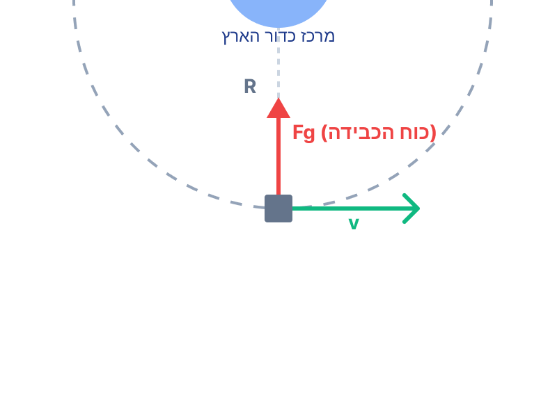

סעיף א' - מציאת זמן המחזור של הלוויין
- הלוויין נמצא תמיד מעל אותה נקודה P על פני כדור הארץ.
- כדור הארץ משלים סיבוב אחד סביב צירו בכל יממה (24 שעות).
את זמן המחזור, \( T_{s} \), של לוויין התקשורת.
3. נוסחאות ועקרונות בשימוש:
עיקרון התנועה היחסית: כדי שלוויין ייראה נייח ביחס לנקודה על פני כדור הארץ המסתובב, המהירות הזוויתית של הלוויין חייבת להיות זהה למהירות הזוויתית של כדור הארץ סביב צירו.
4. הצבה ופתרון:
מכיוון שהלוויין נמצא תמיד מעל אותה נקודה, הוא חייב להשלים הקפה אחת סביב כדור הארץ בדיוק באותו הזמן שלוקח לכדור הארץ להשלים סיבוב אחד סביב צירו.
נבצע המרת יחידות ל-MKS (שניות):
שימו לב! לוויין מסוג זה נקרא "לוויין גאוסטציונרי" (גיאו = ארץ, סטציונרי = נייח). למרות שהלוויין נע במהירות אדירה בחלל, מתצפיתן העומד על כדור הארץ הוא נראה חסר תנועה. תכונה זו הופכת אותו לאידיאלי עבור צלחות לווין ביתיות (כמו של "יס"), אשר יכולות להיות מכוונות אליו פעם אחת מבלי צורך לנוע ולעקוב אחריו.
סעיף ב' - חישוב רדיוס מסלול הלוויין באמצעות חוק קפלר השלישי
- זמן המחזור של הלוויין (מסעיף קודם): \( T_{s} = 1 \text{ day} = 86,400 \text{ s} \).
- מתוך דף הנוסחאות, הנתונים עבור תנועת הירח סביב כדור הארץ:
- רדיוס מסלול הירח: \( R_{m} = 3.84 \cdot 10^{8} \text{ m} \)
- זמן המחזור של הירח: \( T_{m} = 27.3 \text{ days} \)
\( T_{m} = 27.3 \cdot 24 \cdot 60 \cdot 60 = 2,358,720 \text{ s} \)
את רדיוס המסלול של הלוויין התקשורתי, \( R_{s} \).
3. נוסחאות ועקרונות בשימוש:
נשתמש בחוק השלישי של קפלר. מכיוון שגם הלוויין וגם הירח מקיפים את אותו הגוף המרכזי (כדור הארץ), יחס הריבועים של זמני המחזור שלהם שווה ליחס החזקה השלישית של רדיוסי המסלולים שלהם:
4. הצבה ופתרון:
נבודד את רדיוס הלוויין \( R_{s} \) מהמשוואה:
נציב את הנתונים ביחידות MKS:
נחשב את היחס מתחת לשורש (שימו לב, היחס בשניות זהה בדיוק ליחס ביממות, \( \frac{1}{27.3} \)):
במקרים של יחס חסר יחידות, כמו בחוק קפלר השלישי, מותר להציב ימים בימים, שעות בשעות או שנים בשנים, כל עוד מבינים שהיחידות אכן מצטמצמות. אותו רעיון נכון גם ליחס של הרדיוסים: מותר לעבוד למשל עם מטרים במטרים או קילומטרים בקילומטרים, אם שומרים על אותן יחידות בשני האיברים ויודעים מה עושים. אם אתם בטוחים בכך, זו דרך תקינה לגמרי. אם יש ספק או אם אינכם בטוחים, עברו ליחידות תקניות (MKS) - זו הדרך הבטוחה שתוביל אתכם לתוצאה נכונה וגם תקטין טעויות בסעיפים הבאים, כמו חישוב מהירות במטרים לשנייה.
סעיף ג' - חישוב מהירות הלוויין
תרשים כוחות וקינמטיקה: המהירות משיקה למסלול, והכוח השקול פונה למרכז

- רדיוס המסלול שמצאנו: \( R = 4.2351 \cdot 10^{7} \text{ m} \) (אנו משתמשים בערך המדויק יותר מתוך החישוב כדי להימנע משגיאות עיגול נגררות).
- זמן המחזור שמצאנו: \( T = 86,400 \text{ s} \).
את גודל המהירות הקווית של הלוויין במסלולו, \( v \).
3. נוסחאות ועקרונות בשימוש:
בתנועה מעגלית קצובה, המהירות הקווית שווה להיקף המסלול חלקי זמן המחזור:
4. הצבה ופתרון:
נציב את הנתונים ישירות אל תוך הנוסחה:
שימו לב למהירות האדירה! כ-3 קילומטרים בשנייה אחת. זוהי המהירות הנדרשת כדי שהכוח הצנטריפטלי (אשר מסופק במלואו על ידי כוח הכבידה של כדור הארץ) "ימשוך" את הלוויין בדיוק במידה הנדרשת כדי לעקם את מסלולו למעגל מושלם, מבלי שיפול לכדור הארץ ומבלי שיברח לחלל.
סעיף ד' - הסבר מדוע מסלול הלוויין חייב להיות מעגלי
הלוויין חייב להימצא תמיד מעל אותה נקודה בדיוק על פני כדור הארץ.
הסבר פיזיקלי השולל מסלול אליפטי ומחייב מסלול מעגלי.
3. עקרונות בשימוש:
חוק קפלר השני (חוק השטחים): במסלול אליפטי, גודל המהירות הקווית של הגוף משתנה - הוא גדל כשהלוויין קרוב יותר לכדור הארץ וקטן כשהוא מתרחק. כתוצאה מכך, גם המהירות הזוויתית שלו \( \omega \) משתנה לאורך המסלול.
4. פתרון והסבר מלא:
כדי שהלוויין יישאר כל הזמן מעל אותה נקודה P, המהירות הזוויתית של הלוויין סביב כדור הארץ חייבת להיות זהה לחלוטין למהירות הזוויתית של כדור הארץ סביב צירו בכל רגע ורגע.
כדור הארץ מסתובב סביב צירו במהירות זוויתית קבועה לחלוטין. אם מסלול הלוויין היה אליפטי, מהירותו הזוויתית הייתה משתנה (גבוהה בפריגאה ונמוכה באפוגיאה). במצב כזה, הלוויין היה לעיתים "משיג" את הנקודה P ולעיתים "מפגר" אחריה, ולא היה נשאר מעליה באופן קבוע. הדרך היחידה שבה המהירות הזוויתית תישאר קבועה תמיד היא תנועה במסלול מעגלי.
שאלות מסוג "הסבירו מדוע..." דורשות שלילת חלופות. הראו תמיד מה היה קורה אילו החלופה הייתה מתקיימת (אילו המסלול היה אליפטי) וכיצד זה מוביל לסתירה של נתוני השאלה. זה מראה להבוחן על הבנה עמוקה של החומר התיאורטי!
סעיף ה' - הסבר מדוע הנקודה P חייבת להימצא על קו המשווה
סימולציה פשוטה: מתי לווין נשאר מעל נקודה קבועה?
כאן זמן המחזור של הלווין קבוע (24 שעות) וגם זמן הסיבוב של כדור הארץ קבוע. המשתנה היחיד הוא הטיית מישור המסלול מקו המשווה. במבט הימני רואים את נקודת ההיטל של הלווין על הקרקע: רק כאשר ההטיה היא 0° הנקודה נשארת על P.
מבט חלל
מבט פני כדור הארץ (נקודת היטל)
הלוויין סובב בתיאום מושלם עם כדור הארץ ונשאר מעל נקודה קבועה P.
הסבר גיאומטרי-פיזיקלי לכך שהנקודה P אינה יכולה להיות בשום קו רוחב למעט קו המשווה.
3. עקרונות בשימוש:
בתנועה מעגלית, הכוח השקול (שהוא כוח הכבידה במקרה זה) חייב להיות מכוון אל מרכז מעגל התנועה. כוח הכבידה של כדור הארץ תמיד מכוון אל מרכז כדור הארץ.
4. פתרון והסבר מלא:
כדי שלוויין יישאר כל הזמן מעל נקודה P מסוימת, עליו לנוע במסלול מעגלי אשר מישורו מקביל לאותו קו רוחב של הנקודה. מרכז המעגל שבו נע הלוויין חייב להימצא בדיוק באמצע המישור שלו.
עם זאת, הכוח היחיד הפועל על הלוויין הוא כוח המשיכה של כדור הארץ. כוח זה מהווה את הכוח הרדיאלי הפועל עליו, וכוח כבידה תמיד מצביע אל מרכז המסה - כלומר, לכיוון מרכז כדור הארץ.
אם הלוויין חג מעל קו רוחב שאינו קו המשווה (כפי שמתואר בתרשים לעיל), נוצרת סתירה: הכוח הרדיאלי הדרוש לתנועה המעגלית (החץ הכתום) פונה למרכז המעגל של אותו קו רוחב, בעוד כוח המשיכה של כדור הארץ (החץ הירוק) מושך את הלוויין כלפי מטה אל מרכז כדור הארץ. במצב כזה הלוויין היה מיד "נופל" דרומה (או צפונה) אל עבר קו המשווה. המקום היחיד בו מרכז מישור התנועה המעגלית מתלכד עם מרכז כדור הארץ הוא מישור קו המשווה.
זהו אחד הרעיונות היפים ביותר במכניקה של הלוויינים. אין "קסם" שמאפשר ללוויין לרחף תמיד מעל תל אביב (הנמצאת בקו רוחב 32 בערך)! לכן צלחות הלוויין בישראל תמיד מכוונות דרומה - אל עבר קו המשווה, שרק מעליו חונים הלוויינים הגאוסטציונריים. הדיאגרמה פה היא כלי נשק אדיר להבנת המנגנון.